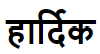
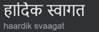
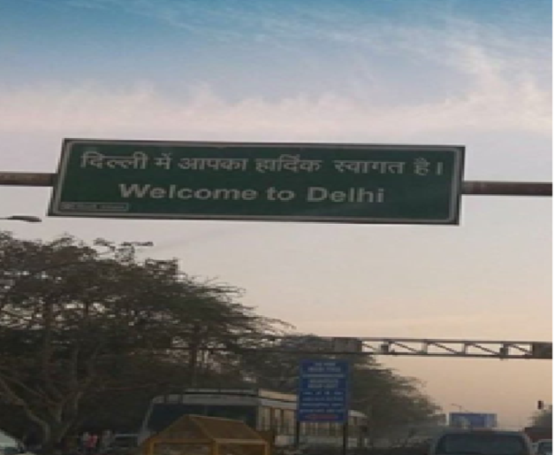

Meaning
You might already know that every Indian name has a meaning :). The word Hardik  is a Hindi word which means “From the core of the Heart” or “ Whole Heartedly” or “Heart Felt”.
Example: “Hardik Svaagat”  which in English mean Heartfelt Welcome OR Hardik shubhkamna (Heartfelt wishes)
This is something you may get to read this name in most of the places in India like on: hoardings, city/country entrances etc or festive wishes

Pronunciation
It is very common for non-Hindi speakers to mispronounce this name, but remember it may sound insulting or abusive to the person on recieving end .
It is very important to pay heed to the sounds of the words in Indian languages (There are twice the number of alphabets in Hind (52) as compared to English (26)). Hence more sounds as compared 😊).
The way this name is pronounces as is `Haar- thee – ik (Har ðiː ik)` and Definitely Not as: `Hardick`
Here the alphabet d is pronounced as most common words of English language like The, Then and Though` or Thee, Thou (from Shakespearean English) .
NOT as "D" in Don, Dear or Denmark or "Th" in Think, Thor or Thankyou.
Dont make that mistake :)
Below is the example on how it should be pronounced:
source: pronouncenames.com
Hope nexts time you meet a person named Hardik; you call him with his correct name 😊
For suggestions on improvement of this page email me it: hardik.s.sood@gmail.com.